Echizencho, Fukui: things to do, food and stays
Echizencho · Fukui
Echizencho
Highlighted on the Fukui map.

Stay
料理宿やまざき
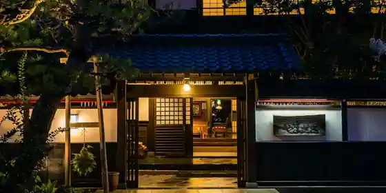
Ryori Yado Yamazaki
Inn in Echizencho with a renovated traditional house.
農家民宿山いちご
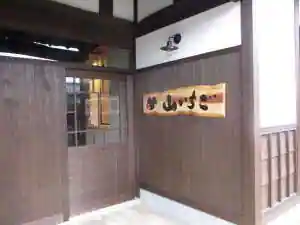
Noka Minshuku Yama Ichigo
Family-run minshuku in Otosaka, Echizencho with a renovated traditional house.
泰澄の杜
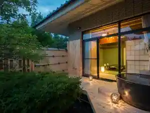
Taicho No Mori
Inn at Zenyutakanatennen Onsen in Ogura, Echizencho with a quiet countryside setting.
オタイコヒルズ
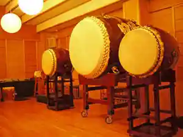
Otaikohiruzu
Inn in Shimokawara, Echizencho with groups.
料理旅館 樹香苑
Ryori Ryokan Juka En
Dining
ふるさとの宿こばせ
Furusatono Yado Kobase
海の幸食処 えちぜん
Umi No Sachi Shoku Tokoro Echizen
蟹かに亭
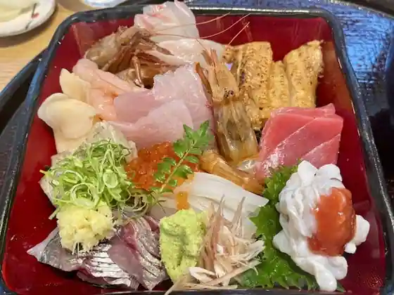
Kani Kani Tei
滝の川
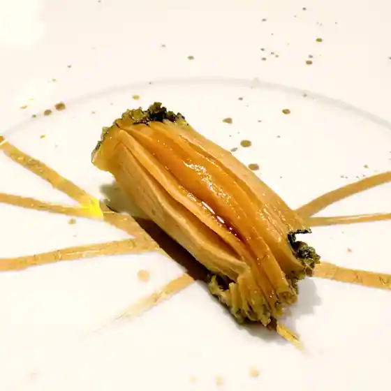
Taki No Kawa
お食事処かねいち
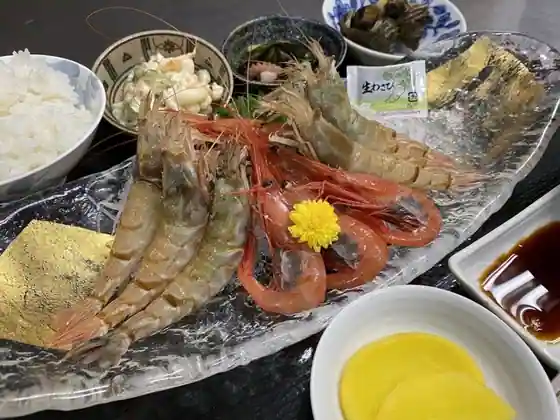
O Shokuji Tokoro Kaneichi
めん房 新月亭
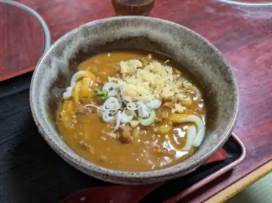
Men Bo Shingetsu Tei
だいこん舎
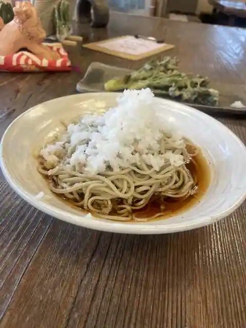
Daikon Sha
料理旅館 平成
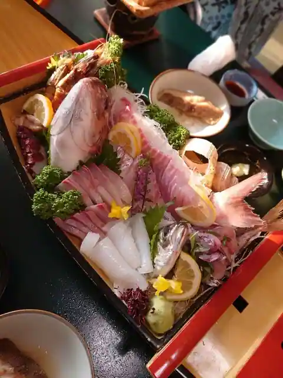
Ryori Ryokan Heisei
花のゆめ
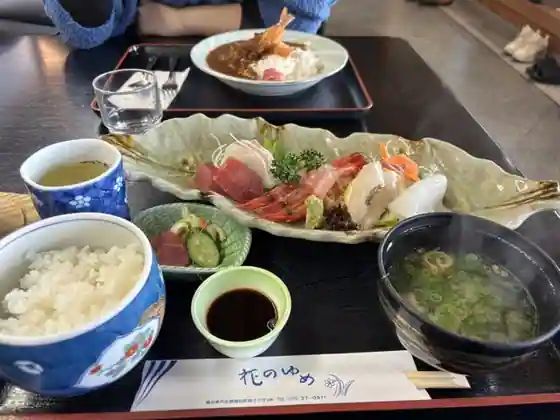
Hana Noyume
海食空間 かに乃花
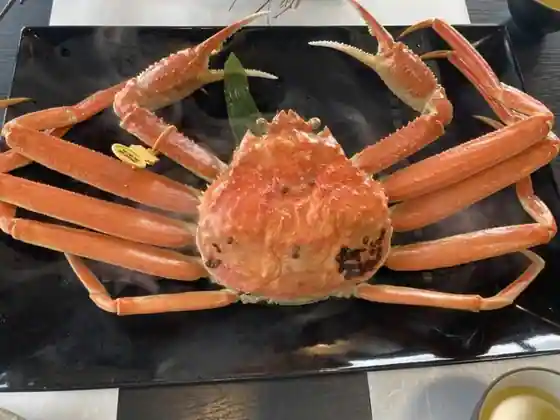
Kaishoku Kukan Kani No Hana
はまゆう
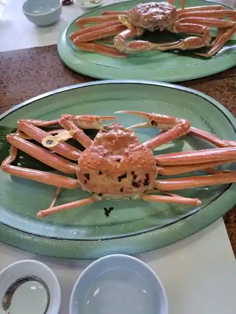
Hamayu
楽膳
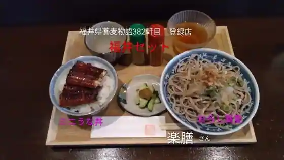
Raku Zen
旅籠 おけや
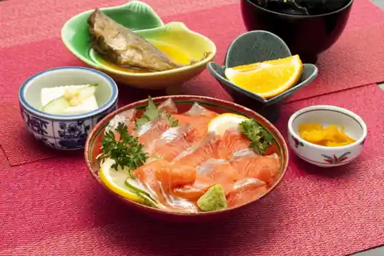
Hatago Okeya
魚菜料理 出みせ
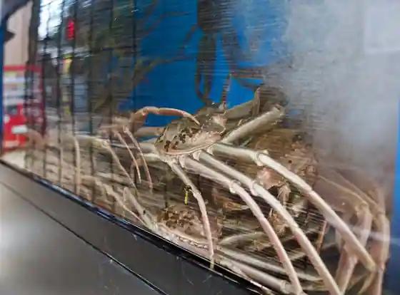
Gyosai Ryori Demi Se
お食事処うおいち
O Shokuji Tokoro Uoichi
岩本屋
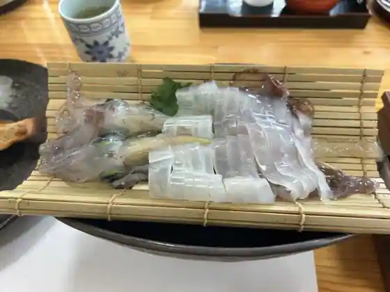
Iwamoto Ya
りぞうと旅館 宿かり
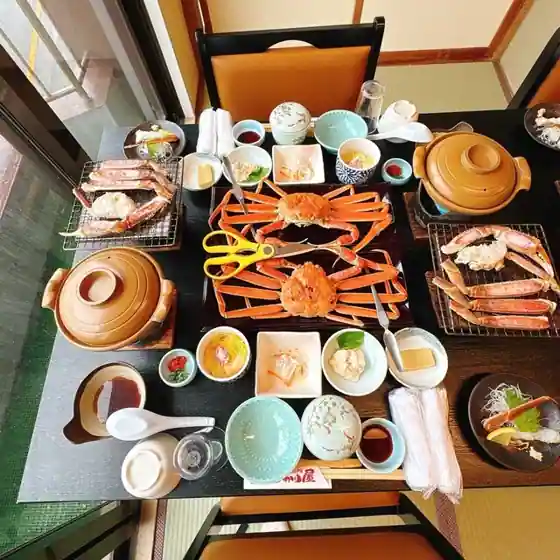
Rizoto Ryokan Yado Kari
リズエアール
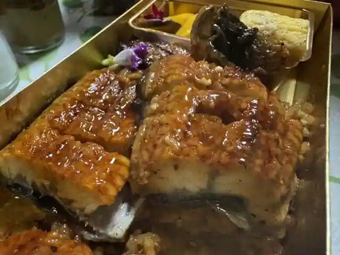
Rizuearu
いなだや
Inadaya
ファミリーレストラン こめや
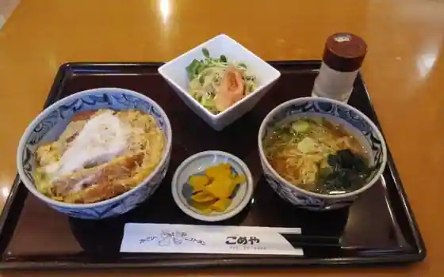
Famiri Restaurant Komeya
田嶋
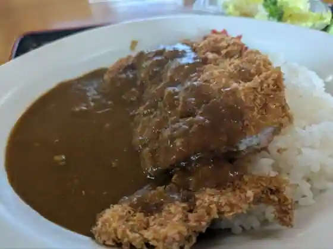
Tajima
丸太屋
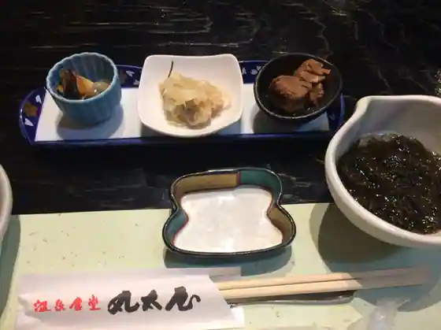
Maruta Ya
秀竹
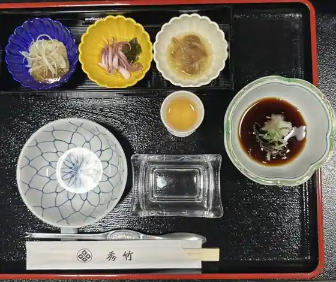
Shu Take
朝日風月堂
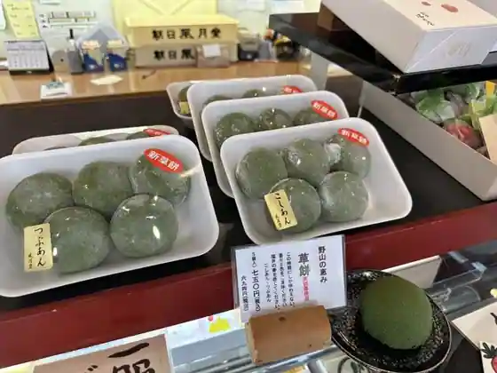
Asahi Fugetsu Do
Sights
Echizencho Suisen Gunsei Chi

Ochi Shrine

Echizencho Togei Village

Echizencho Gani Museum
Minshuku Keishin

Roadside Station Echizencho
Echizencho Ni no Miya Tsurugi Shrine (Tsurugi Shrine)
Echizencho Misaki Suisen Land
Ko Tori Mon
Ryori Yado Yamazaki
Yukyu Roman no Mori FOREST CAMP BASE
Echizencho Misaki
Echizencho Onsen Rotemburo Isaribi
Fukui Sogo Botanical Garden Purantopia
Ryokan Hamayu
Echizencho Zu Onsen Araki
Echizencho Umi no Ie Minshuku Shinano
ECHIZEN Rogobujie
Fukuiken Togei Kan
Echizencho Ito Nama Onsen Taicho no Mori
Ryokan Jinpei
Cho Su Hama Beach (Echizencho)
Hagino Shogakko Kyu Matsu Bunko Ato
Mobara Jinko Beach (Echizencho)
Ryokan Hama Tomi
Echizencho Togei Village Bunka Koryu Hall
Echizencho Yaki no Kan
Furusato no Yado Kobase
Minshuku Nakade
Echizencho Onsen Rotemburo (Nihonkai)
Nashigataira Senmaida Suisen Sono (Echizencho Suisen Gunsei Chi)
Echizencho Oda Bunka Rekishikan
Echizencho Asahi no Himawari Hatake
Omoidena farm
Tamagawa Dokutsu Kannon
Echizencho Togei Village Hana Mizuki Onsen Wakatake So
Roadside Station Echizencho Nai (Echizencho Tourist Information) (Echizencho Kanko Renmei)
Sengahama Beach (Echizencho)
Kome no Beach (Echizencho)
Echizencho Koyo Museum
Shirahama Beach (Echizencho)
Kabeishi Hama Beach (Echizencho)
Jinmeigatani Sue Utsuwa Kamato
Kuriya Ohama Beach (Echizencho)
Umeura Beach (Echizencho)
Tamagawa Beach (Echizencho)
Roadside Station Park In Tanjogaoka
Semimaru no Haka
Michi Kuchi Beach (Echizencho)
Kowaka Ongyoku Hassho no Chi Kinenhi
Tori Fun Iwa
Shiroyama
Mobara Beach (Echizencho)
Echizencho Ei Kyugijo Yoko no Sakura Namiki
Echizencho Town Hall